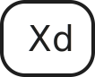
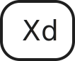

06
PORTFOLIO
PORTFOLIO


Dette tema er en eksamensopgave, hvor jeg har udviklet et portfolio website. Det præsenterer mine projekter fra det første semester. Jeg anvendte metoder og designudviklingsteknikker til at udarbejde sitet, testede det og kodet det i HTML, CSS og JavaScript.
IDÉ-GENERERING

Jeg begyndte min idé-generering med at oprette et mindmap for at nedskrive mine tanker og ideer. Jeg ønskede at bruge et simpelt og stilfuldt design, hvor fokus lå på mit arbejde. Det var vigtigt for mig at inkludere en portfolio-menu, da det giver en god oversigt over mine projekter, og man kan derefter klikke sig ind og se dem nærmere. Dernæst oprettede jeg en Trello, for at bevare et overblik og en struktur over mit arbejde.
DESIGNPROCESS
SKITSER

SKITSE AF PROTOTYPE

SKITSE AF PROTOTYPE

CRAZY 8'S
I skitseringsfasen startede jeg med at bruge Crazy 8-metoden til at illustrere mine layout-ideer. Derefter begyndte jeg at skitsere en prototype af mit portfolio site. Dette gav mig en grundlæggende vision at arbejde ud fra, når jeg senere skulle begynde at udvikle prototypen i Adobe XD.
MOODBOARD
I designprocessen oprettede jeg et moodboard for at visualisere den stil, jeg ønskede for mit site. Jeg ønskede at skabe en moderne minimalistisk stil, der var inspireret af et fotografportfoliosite. Jeg tilføjede et strejf af polaroid-elementer for at skabe en æstetisk fornemmelse.
STYLETILE

WIREFRAMES
WIREFRAMES AF FORSIDE

WIREFRAMES AF PORTFOLIO MENU
WIREFRAMES AF TEMAER
WIREFRAMES AF OM/CV
WIREFRAMES AF KONTAKT
I designprocessen, valgte jeg at bruge Jade Browns stil som inspiration. Denne stil er kendetegnet ved stærke farver, kontraster, fed tekst, asymmetriske figurer og atmosfæriske baggrunde.
SITEMAP
I designprocessen, valgte jeg at bruge Jade Browns stil som inspiration. Denne stil er kendetegnet ved stærke farver, kontraster, fed tekst, asymmetriske figurer og atmosfæriske baggrunde.
PROTOTYPE
PROTOTYPE AF FORSIDE

PROTOTYPE AF FORSIDE
PROTOTYPE AF FORSIDE
I designprocessen, valgte jeg at bruge Jade Browns stil som inspiration. Denne stil er kendetegnet ved stærke farver, kontraster, fed tekst, asymmetriske figurer og atmosfæriske baggrunde.
PROTOTYPE AF MENU
PROTOTYPE AF MENU

PROTOTYPE AF TEMA
PROTOTYPE AF TEMA

PROTOTYPE AF OM + KONTAKT
I designprocessen, valgte jeg at bruge Jade Browns stil som inspiration. Denne stil er kendetegnet ved stærke farver, kontraster, fed tekst, asymmetriske figurer og atmosfæriske baggrunde.
TEST
KODE
 
